How to use this site
A complete walk-through for someone who has never seen the site: what it is for, what every page shows, how to read each part, what every term means, and what you do each week. The small tools on this page are live: change the numbers and watch the result.
Contents
1. What this site is
This is a research desk for a long/short equity book held for 20–60 days, built on the fundamental process taught in the ITPM Professional Trading Masterclass (PTM). It does not tell you what to buy. It collects the data, applies the course's rules as a first reading, shows the reasoning next to every number, and leaves the decision to you.
- Long/short: you buy stocks you expect to rise (longs) and sell short stocks you expect to fall (shorts), so the book can make money in both directions.
- 20–60 days: a trade, not an investment. Longer than about 60 days drifts into a "grey zone"; beyond 120 days it is an investment.
- A trade idea needs four things: fundamentals, timing, a catalyst and a structure. Missing one means it is not a trade idea yet.
- Free data, updated every day: an automatic job runs after the US close (22:23 UTC) and rebuilds every page. A few surveys (ISM, NFIB, China PMIs) are entered by hand because they are not free in machine-readable form.
The process in one picture
The course works top-down first (the economy sets how long or short the whole book should be), then bottom-up (which stocks), then puts the ideas together as a portfolio. Each box below is a page; click it to open it.
- 1Macro DeskIs the economy pointing up or down? → the portfolio bias: net long, neutral or net short.
- 2Macro ideasWhich industries does macro help or hurt? Which regions?
- 3SectorsWhich sectors is the market buying? Where are estimates rising?
- 4ScreenerWhich stocks stand out from their sector? Long and short candidates.
- 5Trade ideaWork one stock through the template: targets, catalysts, timing, structure.
- 6IdeasKeep a pipeline of 10–15 ideas and review them.
- 7Portfolio LabCheck the whole book's risk before you trade.
Around this core: This week (your weekly to-do list), Global, Calendar and Evidence (context for the macro reading), and Data health (is the data fresh?).
2. Start here: your first 15 minutes
- Open This week. It lists the seven weekly steps in order and marks the ones that need attention from this week's data. Use it as your to-do list.
- Open the Macro Desk and read the big word at the top: Net long, Neutral or Net short. That is the automatic portfolio bias. Read "What changed" and the alerts next to it.
- Open Macro ideas and look at the industries with a strong tailwind or headwind.
- Open the Screener, pick a sector, click the type Positive outlier, tick "Volatility ≥ 1.5× VIX only", and sort by EG1.
- Click a ticker. On its trade-idea page press Start a long idea and fill the notes. The idea is saved in your browser and appears on the Ideas page.
- When you hold (or plan) several positions, enter them in the Portfolio Lab and check volatility, correlation and exposure.
3. Map of the pages
| Page | The question it answers | Course | How often |
|---|---|---|---|
| This week | What do I need to do this week? | whole process | weekly |
| Macro Desk | Should the book lean long, short or stay balanced? | lessons 1–15 | weekly, and after big reports |
| Global | Is the world up or down? Is the US beating Europe, Japan, China? | lessons 4, 13–15 | weekly |
| Calendar | Which reports and central-bank meetings fall in the next 20–60 days? | lessons 1, 32 | weekly |
| Evidence | How did the bias rules behave in the past (honestly, with sample sizes)? | method check | now and then |
| Macro ideas | Which industries and regions does macro favour? Is China's official data believable? | lessons 34–35 | weekly |
| Sectors | Which sectors lead or lag the S&P 500, and how do their growth, valuation and revisions compare? | extension of lessons 22–29 | weekly |
| Screener | Which stocks are positive or negative outliers in their sector? | lessons 22–29 | weekly |
| Trade idea (stock.html) | Is this stock a real trade? Targets, catalysts, timing, structure. | lessons 30–33 | per idea (2–4 h) |
| Ideas | Is my pipeline full and up to date? | lesson 33 | weekly |
| Portfolio | Is the whole book's risk right: volatility, correlation, beta, size? | lessons 16–21 | before every change |
| Data health | Is every number fresh? What do I need to enter by hand? | – | when something looks odd |
4. Macro Desk: the portfolio bias
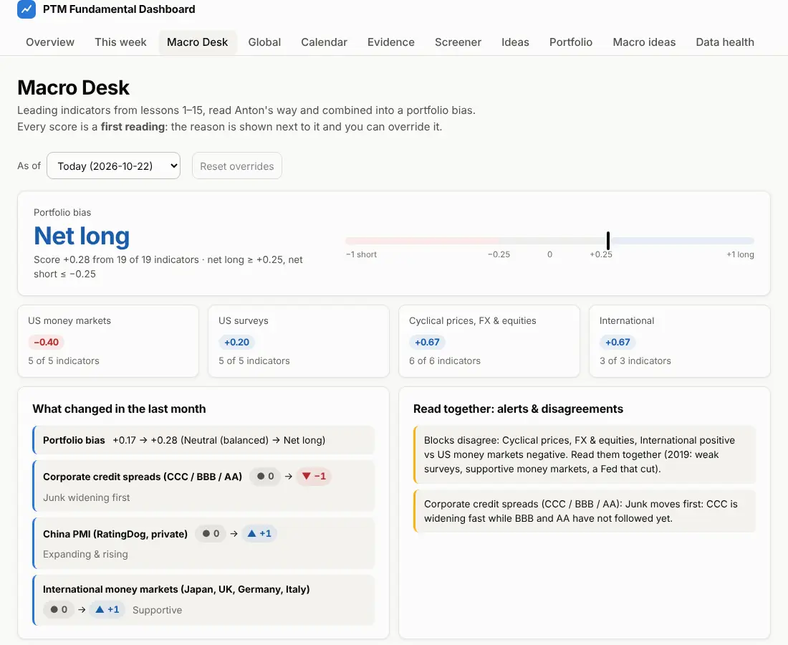
What you see, top to bottom
- As of: pick a past month-end to see what the desk said then, using only data that was known at the time. Reset overrides removes your own scores.
- Portfolio bias: the big word and the meter from −1 (short) to +1 (long). A score of +0.25 or more is Net long, −0.25 or less Net short, in between Neutral (balanced).
- Four blocks: US money markets, US surveys, cyclical prices/FX/equities, international. Each block is the average of its indicators; the bias is the average of the blocks, so a block with many indicators cannot dominate.
- What changed in the last month: every indicator whose score moved, and the bias itself.
- Read together: alerts: blocks that disagree, credit spreads widening in junk first, and the data vs prices alert (the data says long but the S&P 500 is falling, or the opposite).
- Indicator cards (further down): each of the 19 indicators with its score, its state in words ("Expanding", "Junk widening first"…), the reason, the 10-year percentile, the date of the data and a strip of its monthly scores. Under Your reading you can override the score with −1 / 0 / +1; the bias recalculates at once and the override is saved in your browser.
- Confirmers: coincident and lagging data (CPI, payrolls, jobless claims, industrial production, GDP). They confirm or contradict the leading indicators but are never scored.
The 19 leading indicators
| Block | Indicators |
|---|---|
| US money markets | Yield curve (10y − 2y), real 10-year rate, corporate credit spreads (AA / BBB / CCC), M2 money supply, VIX |
| US surveys | ISM Manufacturing ✎, ISM Services ✎, University of Michigan sentiment, building permits, NFIB small-business optimism ✎ |
| Cyclical prices, FX & equities | Brent oil, copper, iron ore, lumber, the US dollar, S&P 500 trend |
| International | Euro-area economic sentiment (ESI), China PMI (RatingDog vs official NBS) ✎, international money markets (Japan, UK, Germany, Italy) |
✎ = entered by hand (see section 13).
Click Chart, components & reading guide → on any card to open its indicator page: a chart (1Y to Max), the course's way of reading it, what to watch for, the first-reading rule and the history of its score.
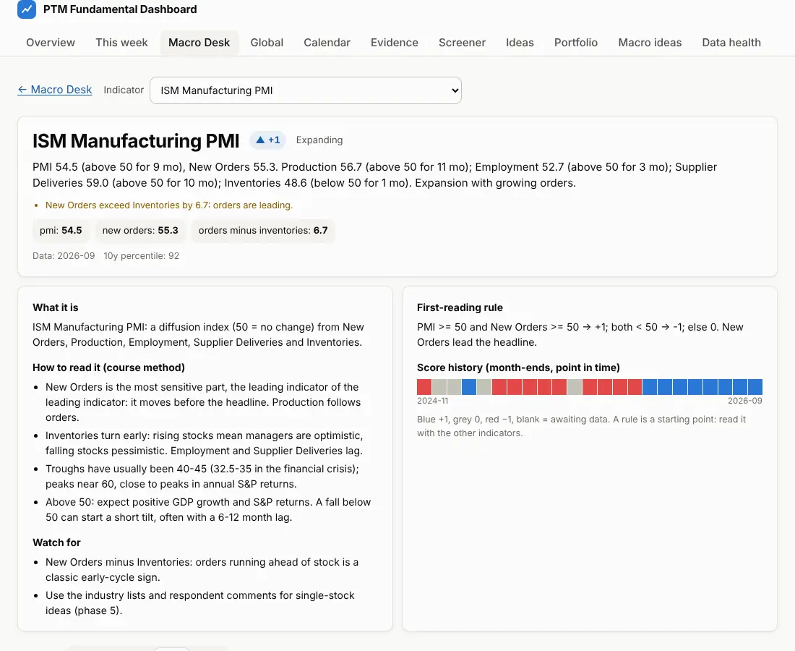
Try it: how the bias is calculated
These are today's 19 automatic scores. Change any of them, as you would with an override on the Macro Desk, and watch the blocks and the bias move. Nothing here is saved.
Global, Calendar and Evidence
- Global: money markets by country (real rates, yield curves) and the regional equity markets side by side (US vs Europe vs Japan vs China), to answer "is the world up or down, and who is leading?". Context only; not scored again.
- Calendar: US data releases, Fed / ECB / BoJ / BoE meetings and the dates the hand-entered reports come out. The 20–60 day window is highlighted: these are the events that can move a trade you open today.
- Evidence: what happened to the S&P 500 after each past bias reading, with the number of months behind every figure. It uses real-time data vintages so the past is not judged with revised numbers. It reports results; the rules are never tuned to make it look good.
- At the bottom of Evidence, the Forward test checks the Screener live: every week all candidate stocks are written down with their price, and their return over the next 20, 40 and 60 trading days (against the S&P 500 and their sector ETF) is filled in as the days pass. The key number is the long-short spread (positive minus negative outliers). It needs many weeks before it means anything; the t-statistic tells you when (|t| above about 2).
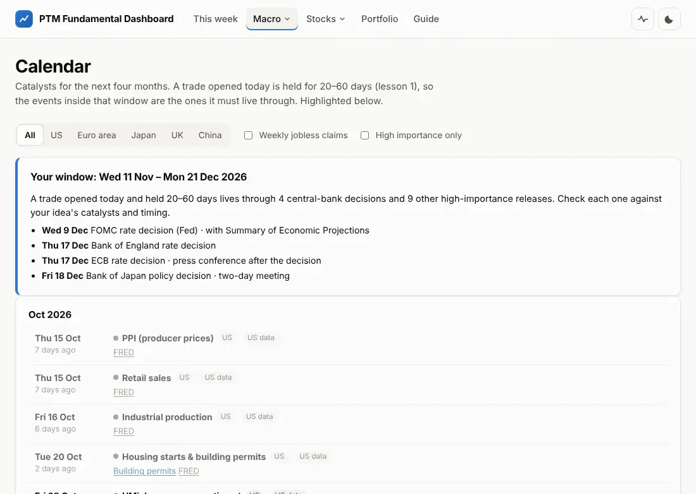
5. Macro ideas: from the economy to industries and countries
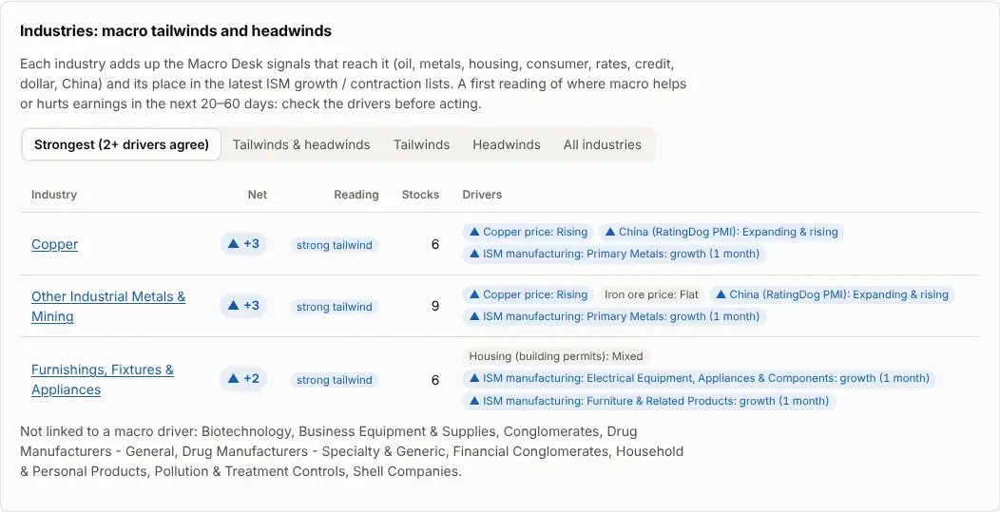
- Net: every macro signal that reaches an industry adds +1 or −1 (for example rising copper prices +1 for copper miners; rising oil −1 for airlines), and so does the industry's place in the latest ISM growth or contraction list. +1 or more = tailwind, −1 or less = headwind, ±2 or more = strong (two or more drivers agree). Hover a driver to read why it matters.
- Macro-driven ideas: the Screener's long candidates inside tailwind industries and its short candidates inside headwind industries. A good place to look for ideas that agree top-down and bottom-up.
- International ideas (ADRs): companies based abroad with a US listing. EPS growth is compared across countries; P/E is hidden where the estimates are in another currency than the share price. Leader = top-quarter growth in both years; laggard = falling in both years.
- China check: China's official PMI is often too smooth to trust. The check compares it with what analysts are doing to Chinese companies' earnings estimates. "Disagree" means: trust the companies, not the official number.
6. Sectors: where to look first
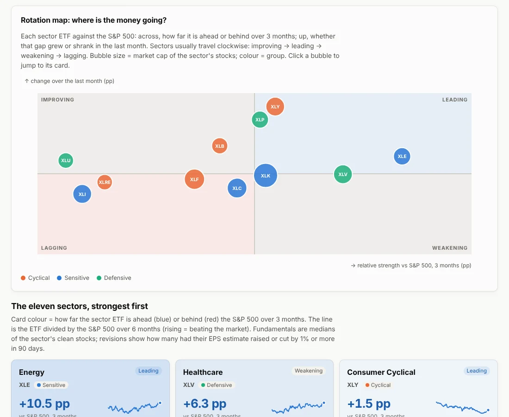
The Screener works one sector at a time. This page puts the eleven sectors side by side so you can decide which ones to screen first. It is not a lesson step: it extends the course's method (sector averages, cyclical vs defensive) and is context only. Nothing on it changes the bias or the types.
- Rotation map: each sector ETF (XLK, XLE…) against the S&P 500. Across = how far it is ahead (right) or behind (left) over 3 months; up = whether that gap grew or shrank in the last month. Leading (ahead and gaining), weakening (ahead but fading), lagging (behind and still losing), improving (behind but catching up). Sectors tend to move clockwise.
- Sector cards: the colour shows the 3-month gap to the S&P 500 (blue ahead, red behind); the line is the ETF divided by the S&P 500. Below: median EPS growth, P/E and PEG of the sector's clean stocks, how many outliers it holds, the macro wind (the Macro ideas score of its industries) and the revision bar: the share of stocks whose EPS estimate analysts raised (blue) or cut (red) in 90 days.
- Growth vs valuation: the sectors on EPS growth and P/E. Bottom-right = fast growth that is cheap; top-left = expensive for little growth.
- Risk appetite: cyclical and sensitive sectors against defensive ones. Rising = the market is buying risk. The top tile says whether that agrees with the Macro Desk bias; when it does not, read both again before acting.
- How to use it: favour longs in sectors that are leading or improving, with rising estimates and a tailwind; look for shorts where the sector is lagging and estimates are being cut. Then open the sector in the Screener ("Screener: N stocks →") or the candidates at the bottom.
7. Screener: finding outliers
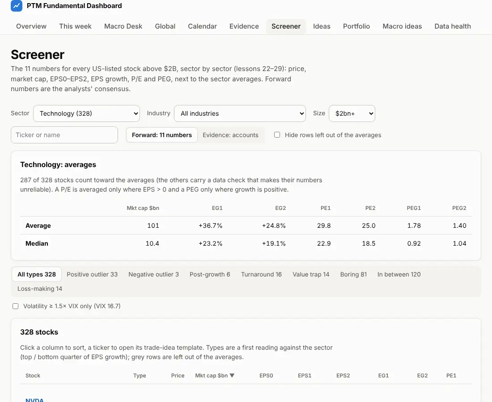
About 2,000 US-listed stocks above $2 billion, compared inside their sector. The course looks forward: what analysts expect for this year and next, not last year's accounts.
The 11 numbers
| Price, Mkt cap | Last price and market capitalisation (in $ billions). |
| EPS0 | Earnings per share of the last reported fiscal year. |
| EPS1, EPS2 | Analysts' average (consensus) EPS for the current and the next fiscal year. |
| EG1, EG2 | EPS growth: EPS1 vs EPS0 and EPS2 vs EPS1, in %. Only from a positive base: growth out of a loss is a turnaround, not a rate. |
| PE1, PE2 | Price ÷ EPS1 and price ÷ EPS2, only when EPS is positive. |
| PEG1, PEG2 | P/E ÷ EPS growth in %, only with positive growth. Below 1 = cheap for its growth. |
Try it: the 11 numbers from four inputs
Types: where a stock sits against its sector
Each stock gets one type, from its EPS growth ranked against the clean stocks of its sector (the percentile: 90 means it grows faster than 90% of them). The course gives the types; the cut-offs (top and bottom quarter) are our choice.
Data checks (lesson 28)
Tags such as Other currency, Feeds disagree, Extreme P/E or Few analysts warn about unreliable numbers. Red tags (and grey rows) keep the stock out of the sector averages and the types. Never trade on a number you have not checked.
Volatility filter
A stock must be able to move enough within 20–60 days: its realised (past 3 months) and implied (from options) volatility should be at least 1.5× the VIX. Tick "Volatility ≥ 1.5× VIX only" to keep only those; the column Vol ÷ VIX shows the ratio.
Evidence: accounts
The button Evidence: accounts switches the table to backward-looking numbers from the companies' SEC filings: margins, EV/EBIT, EV/EBITDA, debt ratios, free cash flow. They explain why money likes or dislikes a stock; they do not forecast.
8. The trade-idea page: one stock through the template
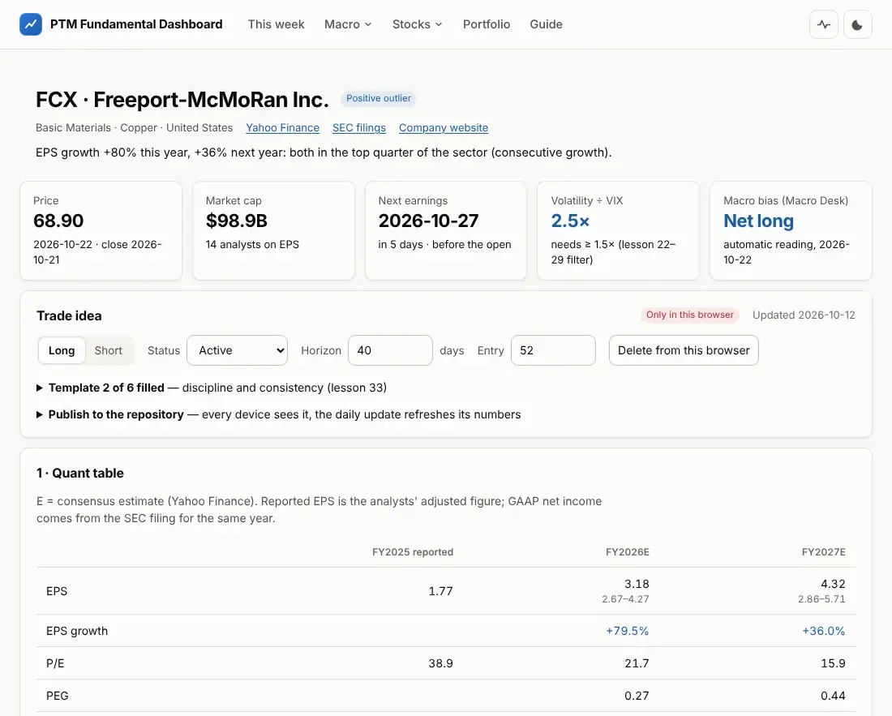
stock.html?t=TICKER.
Every stock in the Screener has this page. The data fills what it can; you fill the rest. It follows the course's trade-idea template in five sections:
| Section | Filled by the data | You write |
|---|---|---|
| 1 · Quant table | EPS, sales, P/E, PEG, P/S, net income for 3 years with the analysts' range; the "story" (earnings or revenue growth); GAAP vs adjusted check; price targets | your own target assumptions |
| 2 · Against the sector | sector and industry averages, largest peers, volatility and the expected move | industry drivers for the next 20–60 days |
| 3 · Business & management | company profile, ownership, analysts' rating and targets | what the company does (1–2 sentences); its KPIs and management's plan |
| 4 · Earnings & catalysts | next earnings date and session, quarter and annual expectations, macro events | non-earnings catalysts with dates |
| 5 · Timing & structure | price chart with 50/200-day averages, trend, relative strength, short interest | timing notes, structure (stock, margin, CFD) and why, review notes |
Price targets
The course builds two targets for each year. EPS-based (upper, bullish): the P/E stays as it is today and earnings grow, so the price grows with EPS. Sales-based (lower, realistic): the price-to-sales stays as it is and sales grow. Always a range, never one number. Try the course's own example (Zendesk, May 2020):
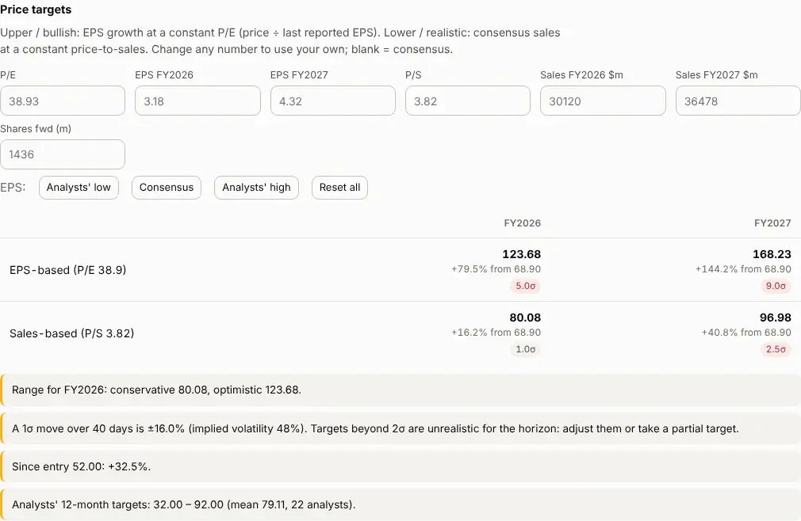
Is the target realistic for 20–60 days?
A stock with 40% annual volatility moves about ±13% in 40 days in a normal ("1σ", one standard deviation) case; about two moves in three stay inside that. A target that needs a move of more than 2σ is unrealistic for the horizon: take a nearer target or a longer view. On the page each target carries its σ tag: 0.8σ realistic, 1.5σ stretched, 2.6σ unrealistic.
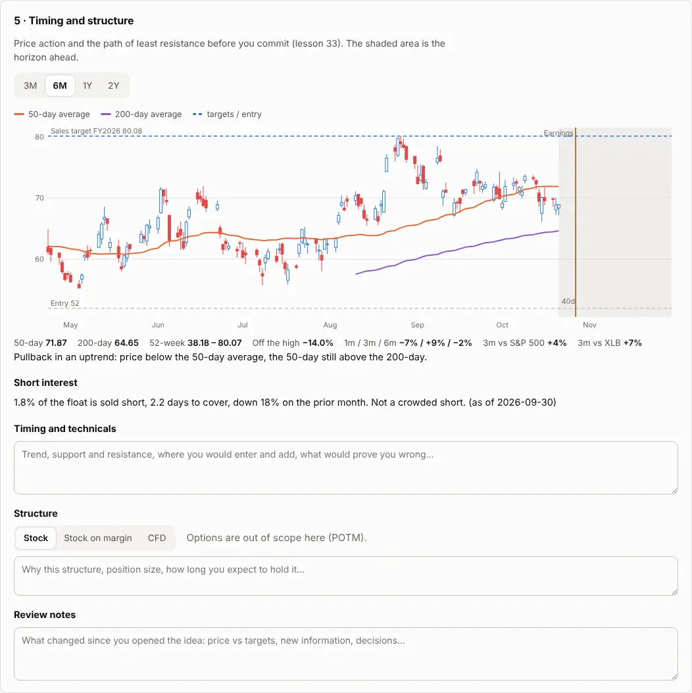
Saving an idea
- Press Start a long idea (or short). The page now shows note boxes in every section.
- Write as you go; everything is saved in this browser at once ("Only in this browser"). The Template x of 6 filled checklist shows what is still missing.
- Set the status (researching → ready → active → closed / dropped), the horizon in days and your entry price.
- Optional: Publish to the repository opens GitHub with the idea as a file; press Commit changes. Every device then sees it. The repository is public, so publish only what you are happy to share.
- When you get out, set the status to Closed: Exit price and date appear (today's price and date are filled in; correct them to your real fill). The trade then counts in the track record.
9. Ideas: your pipeline
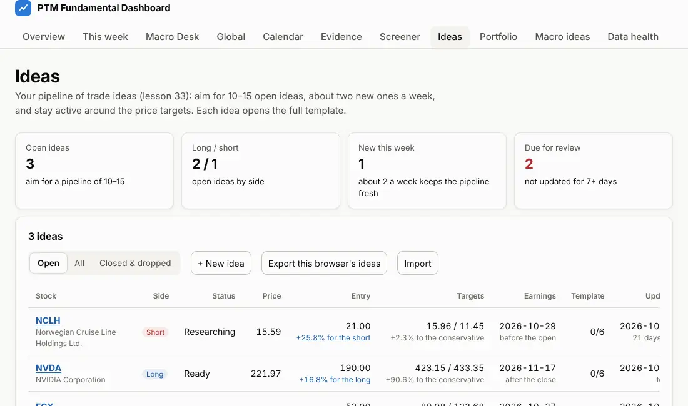
- Aim: 10–15 open ideas, about 2 new ones a week (each takes 2–4 hours). The tiles show where you stand.
- Targets: conservative / optimistic for the current fiscal year, with your own assumptions; "to the conservative" is how far the price still has to go.
- Flags: Review after 7 days without an update, Stale after 14, Target reached (be active around targets), Targets against you, earnings within 7 days.
- Export / Import moves the ideas kept in this browser to another device as a file.
- Track record (bottom of the page): every closed idea with its return for the side, the S&P 500 over the same days, the stock's beta and the alpha (the return minus what the market move would have given at that beta). On top: hit rate, average win and loss, payoff ratio and average alpha. This is how you find out whether your process works: judge it after dozens of trades, not a few.
10. Portfolio Lab: risk of the whole book
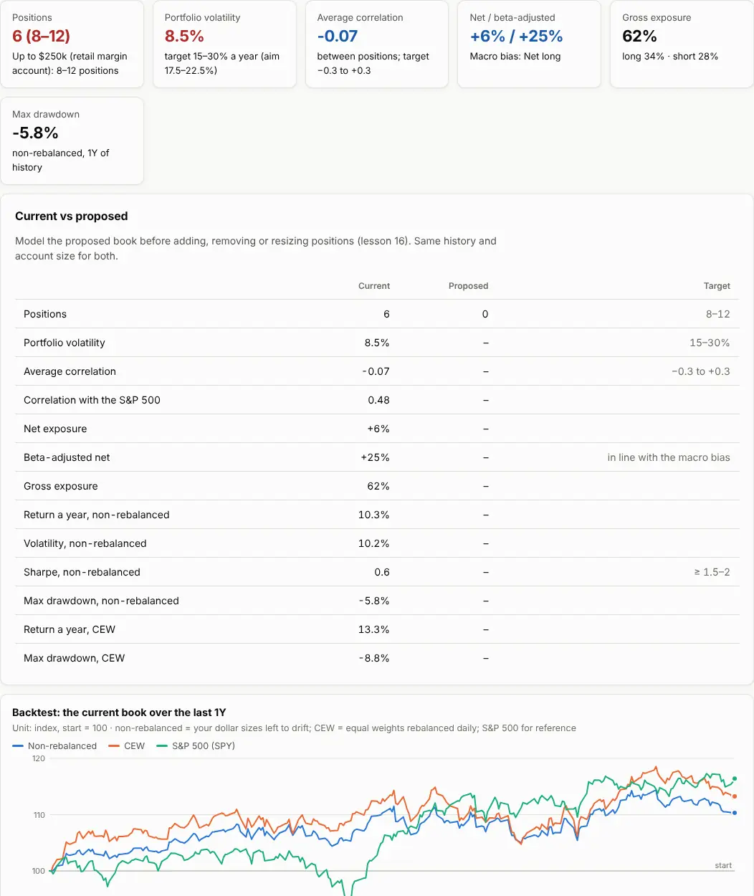
- Enter the Current book (ticker, long or short, size in $) and the account size. Add my active ideas fills it from the Ideas page.
- Build a Proposed book (start from the current one) with the change you are thinking about, and compare the two in the table before you trade.
- Check the targets: volatility 15–30% a year (aim 17.5–22.5%), average correlation between −0.3 and +0.3, a beta-adjusted net exposure in line with the macro bias, and the right number of positions for your account.
Two ways to backtest
- Non-rebalanced: your dollar sizes invested on day one and left alone. What your account would really have done.
- CEW (constant equal weight): every position weighted equally again each day. The quickest way to see which basket does better.
- Drawdown: how far the book fell below its previous high. The deepest one is the "max drawdown".
Try it: why correlation matters
Two positions of the same size. Move the correlation and the sides: a long and a short in stocks that move together cancel each other's risk; two longs that move together add it up.
Beta and exposure
Beta measures how much a stock moves with the S&P 500 (beta 2 = twice as much). $10,000 long of a beta-2 stock against $10,000 short of a beta-0.5 stock is 0% net exposure but +150% beta-adjusted: the book still leans long the market. The beta-adjusted net is the honest measure of how long or short you are.
Sharpe framing
The return a strategy needs = minimum Sharpe ratio × portfolio volatility. At 15–30% volatility: CFDs (Sharpe 1.5) need 22.5–45% a year, US stocks long/short (Sharpe 2) 30–60%, options (Sharpe ≈3.3) 50–100%.
11. This week: the weekly routine
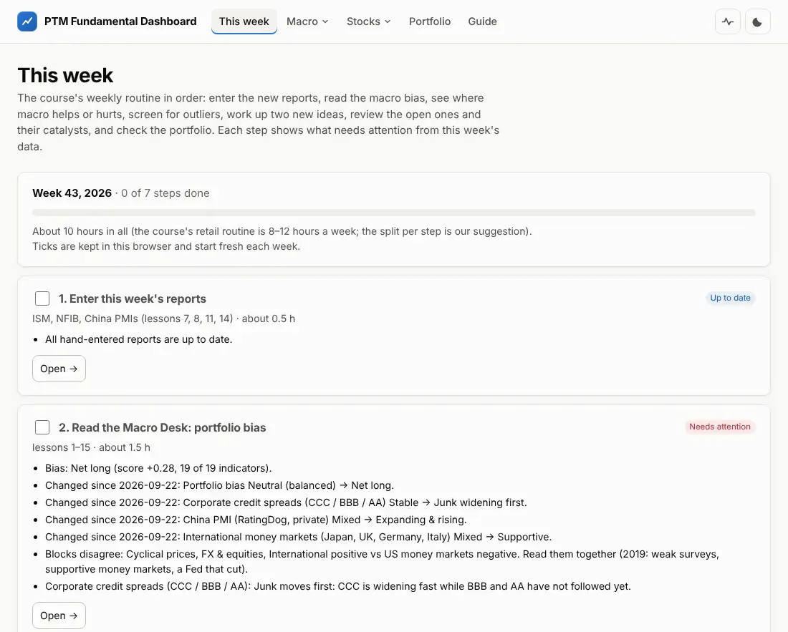
The course's retail routine takes about 8–12 hours a week. The page lays it out in order with our suggested split (about 10 hours): enter the reports (0.5 h) → Macro Desk (1.5 h) → Macro ideas (0.5 h) → Screener (1.5 h) → two new ideas (4 h) → review open ideas and catalysts (1 h) → portfolio (1 h). Tick a step when it is done; the ticks start fresh every Monday.
12. Where the data comes from and when it updates
-
Free sourcesFRED / ALFRED, Yahoo Finance, Eurostat, OECD, University of Michigan, SEC EDGAR, central-bank calendars
-
Your hand-entered reportsISM, NFIB, China PMIs in
data/manual/*.csv -
Daily updateevery day at 22:23 UTC (after the US close), and whenever you change a manual file
-
This websiteevery page rebuilt; the last good copy is kept if a source fails
Data health
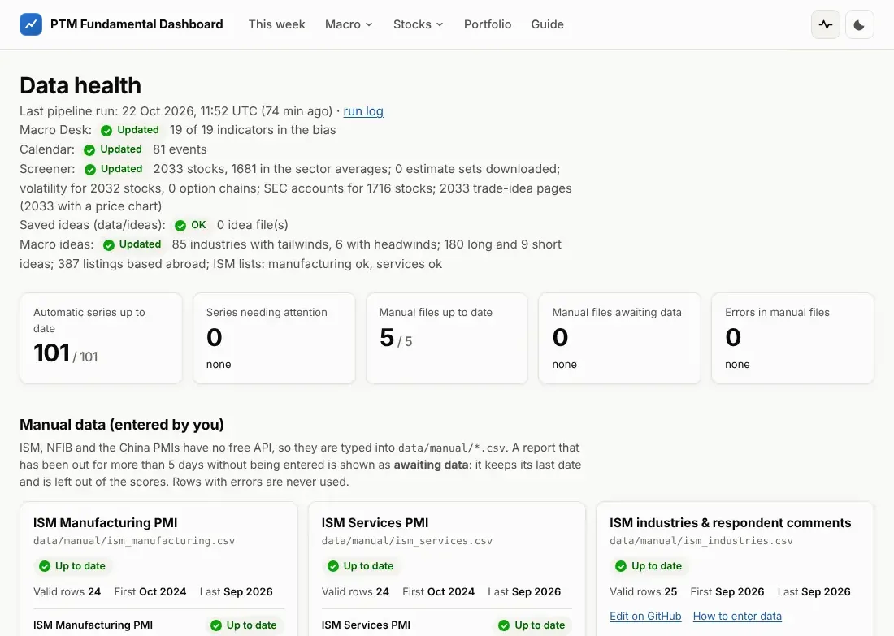
- ✓OK fresh; !Stale older than expected; !Fetch failed today's download failed and the last good copy is used (usually fixes itself the next day); ×No data nothing yet.
- For the hand-entered files: Up to date, New report out (a report is published and waiting for you), Awaiting data (missing for too long: the indicator is left out of the bias, never guessed).
13. Entering the hand-entered reports
Five files, one row per month. The Calendar and This week tell you when a new report is out.
| File | Report | Published |
|---|---|---|
ism_manufacturing.csv |
ISM Manufacturing PMI and its sub-indices (ismworld.org) | 1st business day of the month |
ism_services.csv |
ISM Services PMI and its sub-indices | 3rd business day |
ism_industries.csv |
the industries ISM lists as growing / contracting, with comments | with each ISM report |
nfib_sbet.csv |
NFIB Small Business Optimism and its components | 2nd Tuesday |
china_pmi.csv |
China PMIs: official NBS and private RatingDog | end of month / 1st–3rd business day |
-
On GitHub, open the repository → folder
data/manual→ the file (for exampleism_manufacturing.csv). - Click the pencil icon (Edit this file).
-
Add one line at the end for the new month, in the same order as the header line, e.g.
2026-10,52.1,53.4,…. The month is writtenYYYY-MM; leave a value empty if you do not have it. - Click Commit changes… and then Commit changes.
- The site rebuilds in a few minutes. If a value is wrong (wrong month format, out of range, duplicate month), the update run turns red, GitHub e-mails you, and Data health shows the line and what is wrong.
14. What is saved where
| What | Where | Who sees it | How to move it |
|---|---|---|---|
| Macro Desk overrides | this browser | only you, on this device | – |
| Trade ideas (drafts) | this browser | only you, on this device | Ideas → Export / Import |
| Published ideas | the repository (data/ideas/) |
everyone (the repository is public) | automatic |
| Portfolio books | this browser | only you, on this device | Portfolio → Export / Import |
| This week's ticks | this browser | only you | – |
| Hand-entered reports | the repository (data/manual/) |
everyone | automatic |
| Forward test record | the repository (site/data/forward/), written by the daily update |
everyone | automatic |
Clearing your browser's site data, or using a private window, removes what is kept "in this browser": export your ideas and books now and then.
15. Glossary
Every term used on the site. Type to filter.
16. Questions
Does the site tell me what to buy?
No. Every automatic reading is a first reading of the course's rules, with the reason shown. You decide, and you can override the macro scores and every target assumption.
A number looks wrong. What do I do?
Check its date and the data-check tags. Open Data health to see whether the source failed today. Then check the company's own filings (the trade-idea page links to SEC filings and Yahoo Finance). Free data has errors; the checks catch many, not all.
Why is an indicator "awaiting data"?
Its latest report is missing (for hand-entered ones: not entered yet). It is left out of the bias until the data arrives; the site never fills the gap with a guess or a substitute series.
My ideas disappeared.
Ideas that were never published live only in the browser where you wrote them. Open the site in that browser, or import the file you exported. Publishing an idea keeps a copy in the repository.
Why does my stock not have a page?
Pages exist for US-listed stocks above $2 billion with analyst estimates (the Screener's universe). Smaller or very new stocks are not covered.
Why are some numbers marked "(tune)" in the method notes?
The course gives many rules but not every cut-off. Where we had to choose a number (for example "top quarter of the sector"), it is marked as our choice and can be changed.